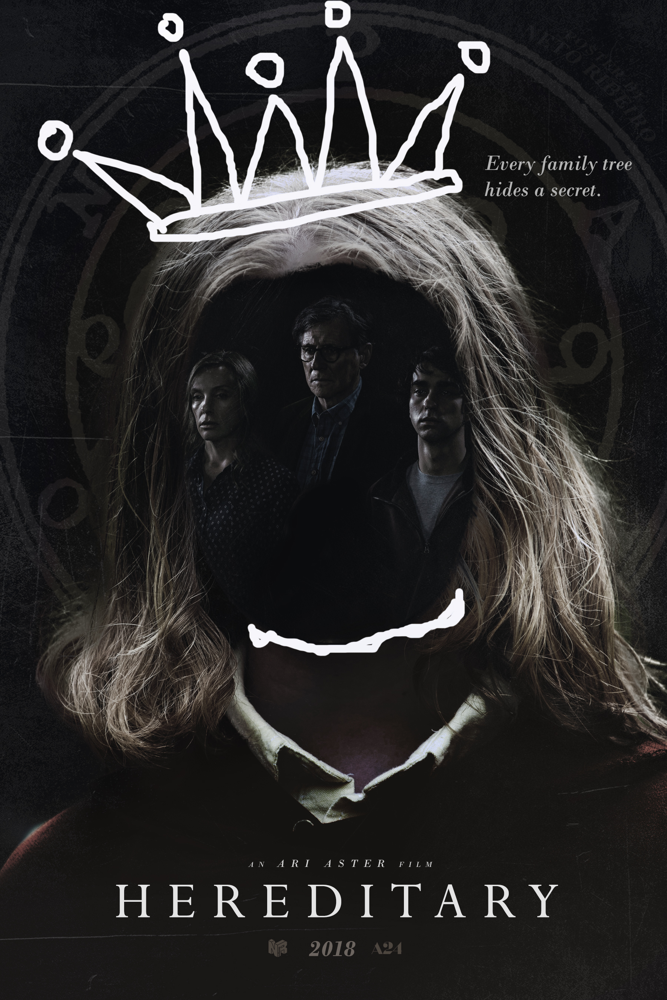

Hereditary
Artist Annie Graham lives in Utah with her husband Steve, their 16-year-old son Peter, and their eccentric and reserved 13-year-old daughter Charlie. At the funeral of her secretive mother, Ellen Leigh, Annie delivers a eulogy explaining their fraught relationship and her mother's extremely private life. A week later, Steve is informed that Ellen's grave has been desecrated, and Annie thinks she sees an apparition of Ellen in her workshop. At a support group for the bereaved, Annie reveals that the rest of her family suffered from mental illness that resulted in their deaths and Ellen was a significant figure in raising Charlie. To attend a party, Peter lies that he is going to a school event, and Annie forces him to take Charlie with him. Unsupervised, Charlie eats cake containing nuts and falls into anaphylactic shock. As Peter drives her to a hospital, she leans out of the window for air; when he swerves to avoid a dead deer, she is decapitated by a telephone pole. In shock, Peter drives home and leaves Charlie's headless corpse in the car. The family grieves following Charlie's funeral, heightening tensions between Annie and Peter and causing Annie to behave coldly towards Steve. Peter is plagued by Charlie's presence around the house. Annie is befriended by a support-group member, Joan. Annie tells her she used to sleepwalk and recounts an incident in which she woke up in Peter's bedroom to find herself, Peter, and Charlie covered in paint thinner with a lit match in her hand. Joan teaches Annie to perform a séance to communicate with Charlie. Annie convinces her family to attempt the séance. Objects begin to move and break, terrifying Peter, and Charlie seemingly possesses Annie until Steve douses her with water. Annie suspects that Charlie's spirit has become malevolent. She throws Charlie's sketchbook into the fireplace but her sleeve also begins to burn. She retrieves it and heads to Joan's apartment for advice, but Joan is gone. Annie notices that Joan's welcome mat resembles her mother's craftwork. It is also revealed that rituals inside the apartment involve pictures of Peter.
Annie goes through her mother's possessions and finds a photo album linking Joan to Ellen, and a book with information about a demon named Paimon who wishes to inhabit the body of a male host. In the attic, Annie finds Ellen's decapitated body with occult symbols on the wall written in blood. At school, Peter slams his head against his desk, breaking his nose, and is brought home. Annie shows Steve her mother's body and the sketchbook. She begs him to burn the sketchbook so she can sacrifice herself to stop the haunting, but he thinks she has gone mad and accuses her of desecrating Ellen's grave herself. Annie throws the book into the fireplace, Steve bursts into flames, and Annie is possessed. Peter awakens to find his father's body before a possessed Annie chases him into the attic which is decorated with occult imagery. Despite Peter locking himself inside, he suddenly discovers Annie having entered the attic, levitating in the air looking down on him while beheading herself with a piano wire while naked coven members smilingly watches Peter. Terrified, Peter jumps out of the window. As he lies on the ground, a shadow is seen leaving his body, whereafter a light enters it in its place and he wakes up. He follows Annie's levitating corpse into Charlie's treehouse, where Charlie's crowned, severed head rests atop a mannequin. Joan, other coven members, and the headless corpses of his mother and grandmother bow to him. Joan addresses him as Charlie and swears an oath to him, informing him that he is Paimon, one of the 8 kings of hell and that he has now been liberated from his female host and asks him to "bind all men to their will as they have bound theirs now and for ever to his".
Mr Robot
Mr. Robot is an American drama thriller television series created by Sam Esmail for USA Network. It stars Rami Malek as Elliot Alderson, a cybersecurity engineer and hacker with social anxiety disorder and clinical depression. Elliot is recruited by an insurrectionary anarchist known as "Mr. Robot", played by Christian Slater, to join a group of hacktivists called "fsociety".[8] The group aims to destroy all debt records by encrypting the financial data of E Corp, the largest conglomerate in the world. The pilot premiered via online and video on demand services on May 27, 2015. The first season debuted on USA Network on June 24, 2015, and the second on July 13, 2016. The third season premiered on October 11, 2017. The fourth and final season premiered on October 6, 2019, and concluded on December 22, 2019. Mr. Robot has received critical acclaim, particularly for the performances of Malek and Slater, its story and visual presentation, and Mac Quayle's musical score. Esmail has received praise for his direction of the series, having directed three episodes in the first season before serving as the sole director for the remainder of the show. The show received numerous accolades, including two Golden Globe Awards, two Primetime Emmy Awards, and a Peabody Award.
Sam Esmail, the show's creator and showrunner, is the credited writer on the vast majority of the episodes.[40] In an interview, Sam Esmail shared that he is fascinated by hacker culture and wanted to make a film about it for around 15 years.[41] In the production, Esmail consulted experts to give a realistic picture of hacking activities.[42] Another inspiration for Esmail, who is of Egyptian descent, was the Arab Spring, where young people who were angry at society used social media to bring about a change.[43][44] He has said that Elliot is a "thinly-veiled version" of himself.[45]